3D Printing Technology Journey For a Code Zero Titi
Pre-Xmas 2021 🎄, I was alone and away from family because I had had surgery in DC. No worries, I
was not sad, I was mostly just bored to death from the recovery. In order for me to keep my mind off things, my
family got me a new toy for Christmas. A 3D Printer!!!!! (ﾉ◕ヮ◕)ﾉ*:･ﾟ✧
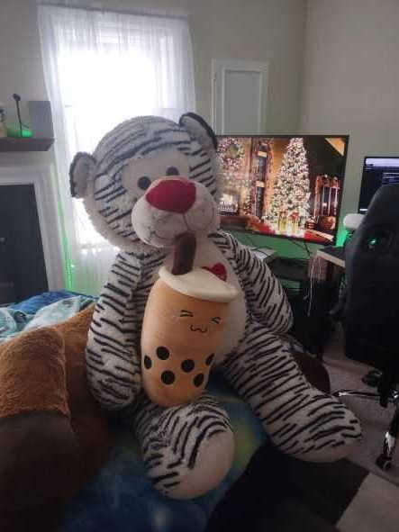 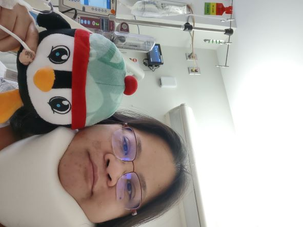
And it really shifted my focus from the pain... into another kind of pain. the fun and frustration
of new toy... "#FUNtrationz!" It was not as easy as a regular 2d printer... (duh) Not as plug and play....
Epic Uh Oh....(┬┬﹏┬┬)
But it was worth the extra work! After hours of setting up and going to YouTube College and Google University,
after a few days I finally printed my first few useless items!!! (┬┬﹏┬┬) I was so happyyyyy~ even tho I did not
design any of these myself.
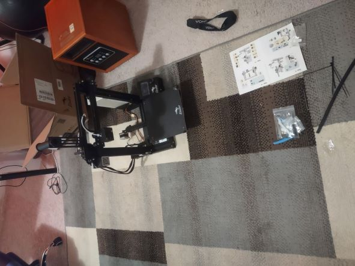 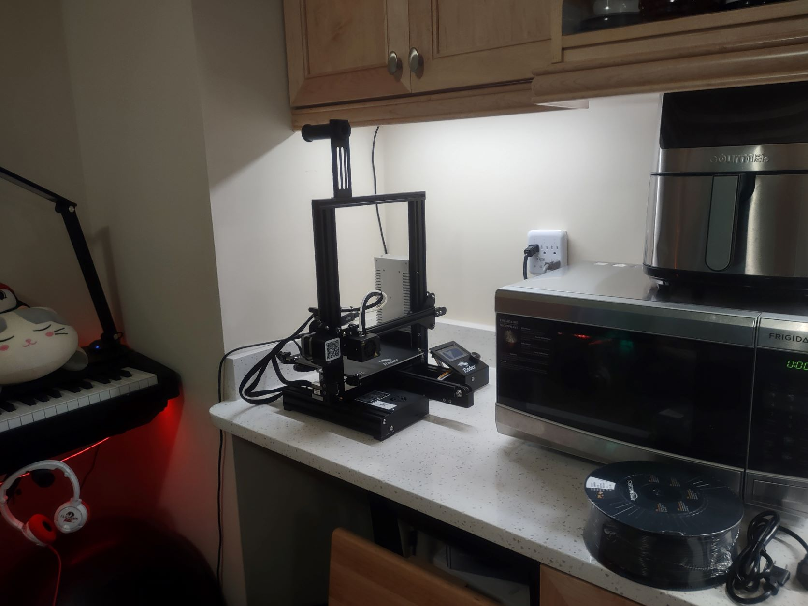 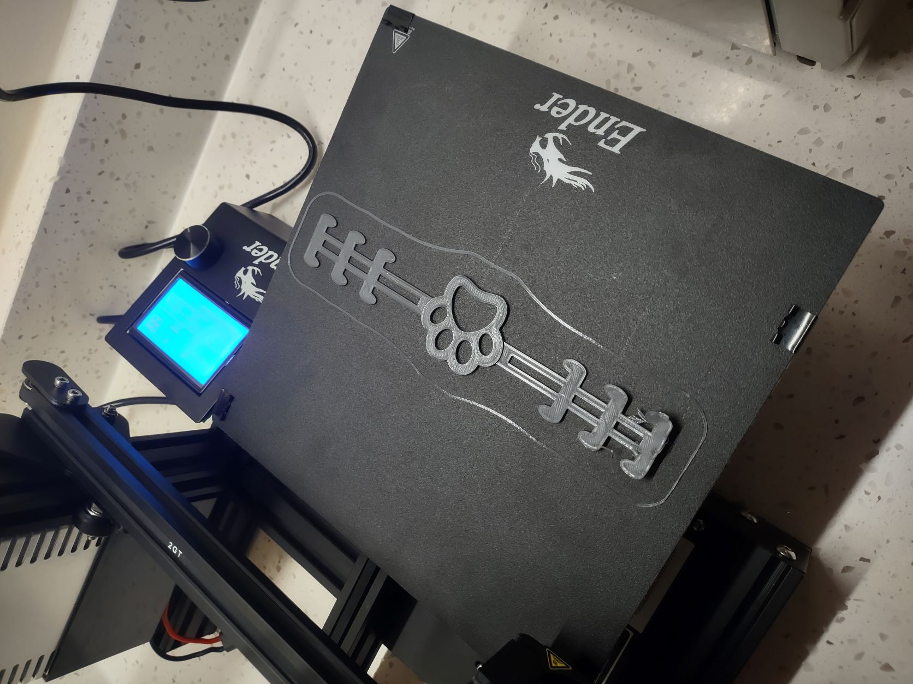 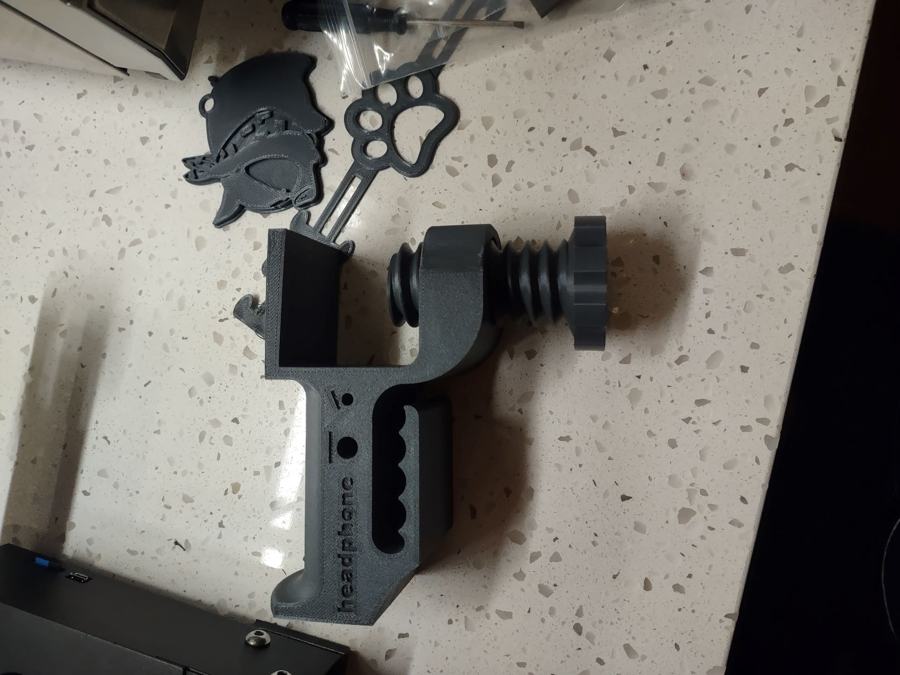
I kept printing more junk, but it was fun so I didn't care. Then I wanted to design something of my
own and the most basic thing you can do involves coding... another Epic Uh Oh moment.... ＞﹏＜
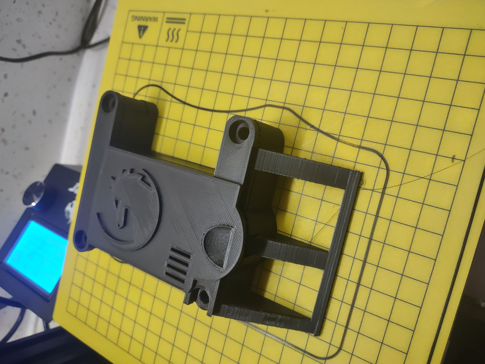 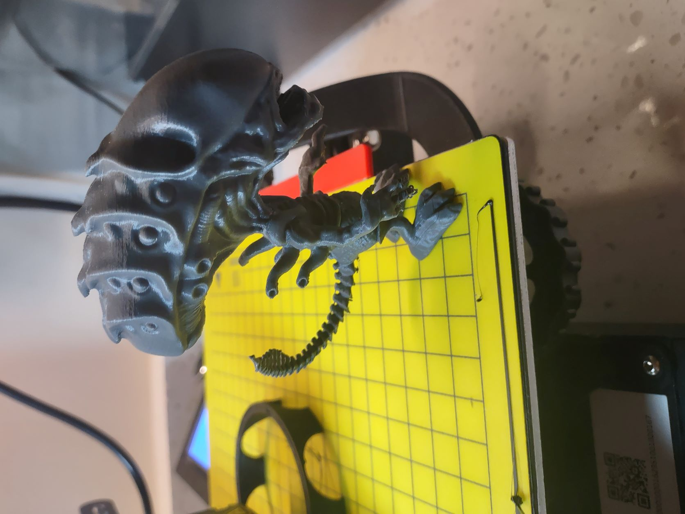 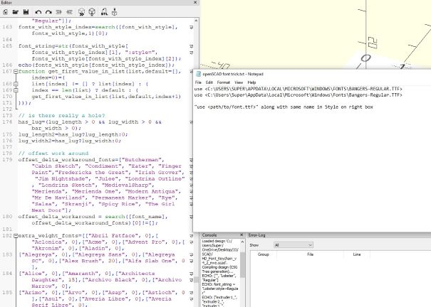
See link here to the most baby level of 3D designer
program using nothing but code. There are other programs (both using and not using code) as well
obviously, but trust me they are even more complicated. ┗( T﹏T )┛
Two months later I got accepted into LaunchCode CodeCamp. Not 3D printing related at all,
I swear! and
ONLY 2 weeks into CodeCamp, plus much much less help from YouTube and Google I was able to fake
my way through it just enough to make my very first extra basic self-designed 3D print! PS. it's not
JavaScript but hey, close enough, guessable, workaroundable (Pretty sure that's not a word) and as
long as it works, again.. who cares~~~
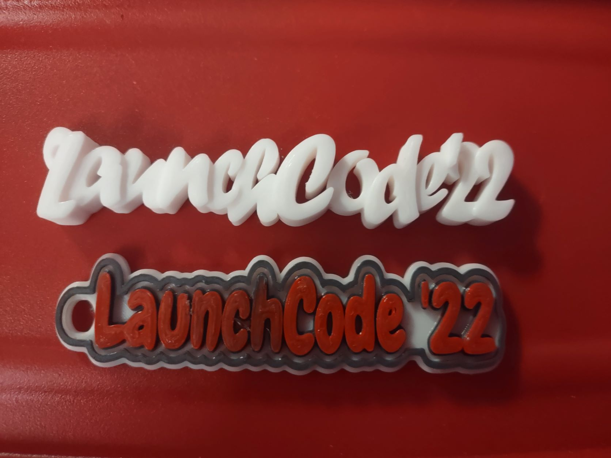 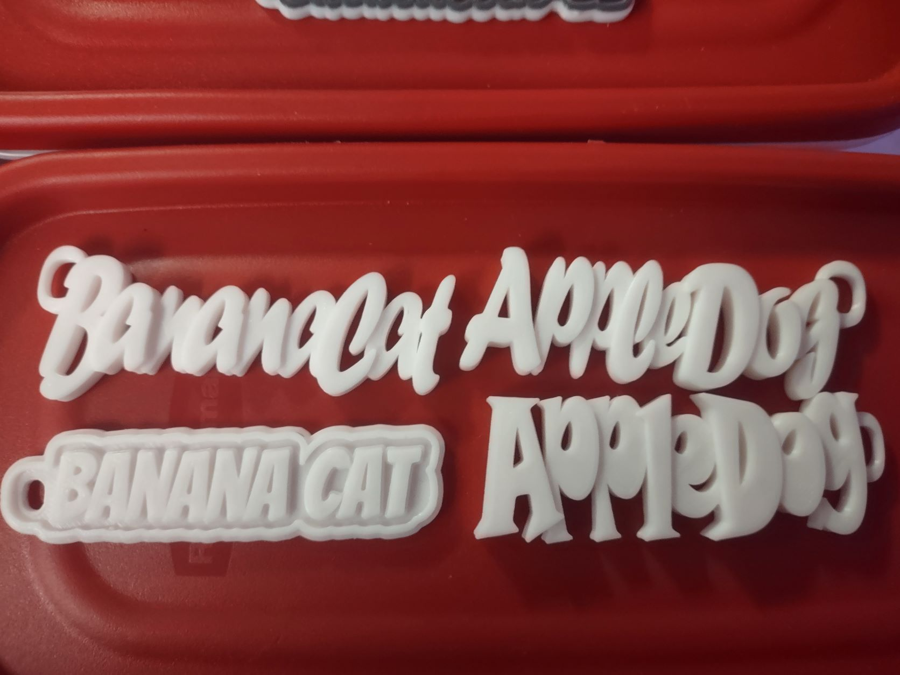
For the first meeting with classmates in Philly I made some gifts for everyone who showed up.
They laughed and were happy so I was happy.
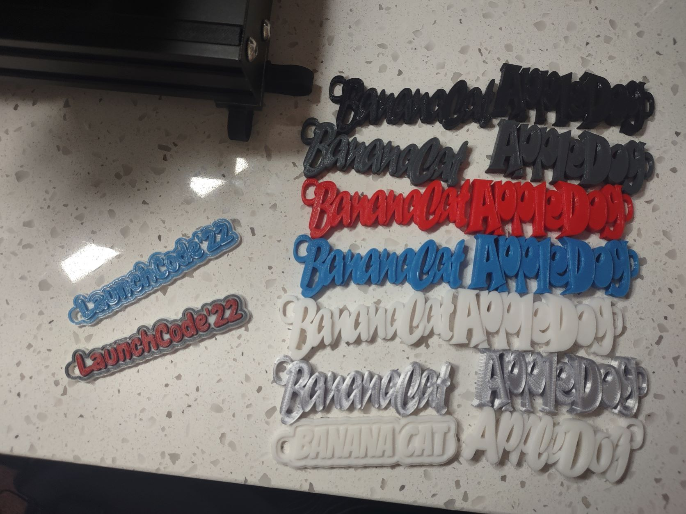
We had a great time, sadly some of us left before the picture was taken, So here is the pretend
picture!
For about a week now, I am planning to make something for everyone's graduation. To whomever
checks this Assignment, please do not tell the classmates! It's a surprise. So far only Francesca
knows about this.
It is still a work in progress, these are not as easy as I anticipated, but it's a learning curve and I even enjoy
the failing involved in the journey of 3D printing.
Hopefully by the time I graduate from CodeCamp, the skills I need will be upgraded for the future useless toys I
make. (～o￣3￣)～ Mwahahahaha~~~
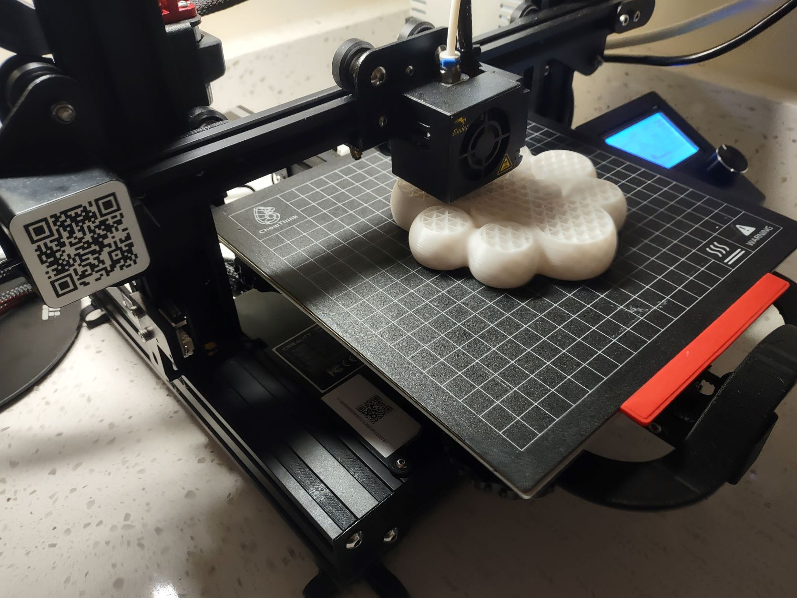 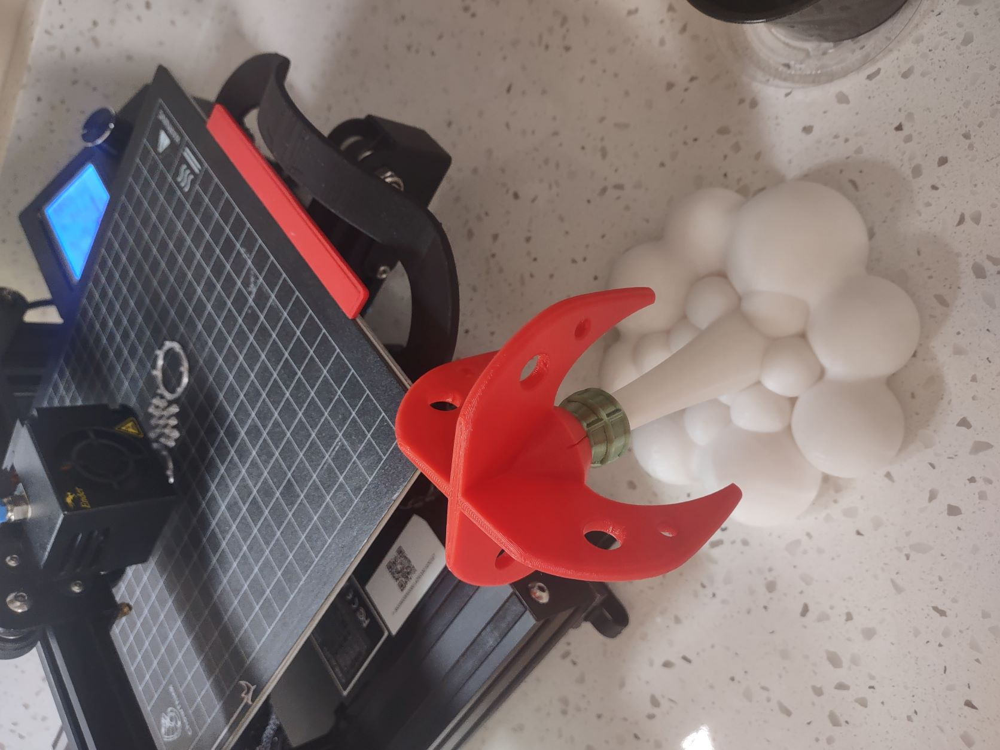 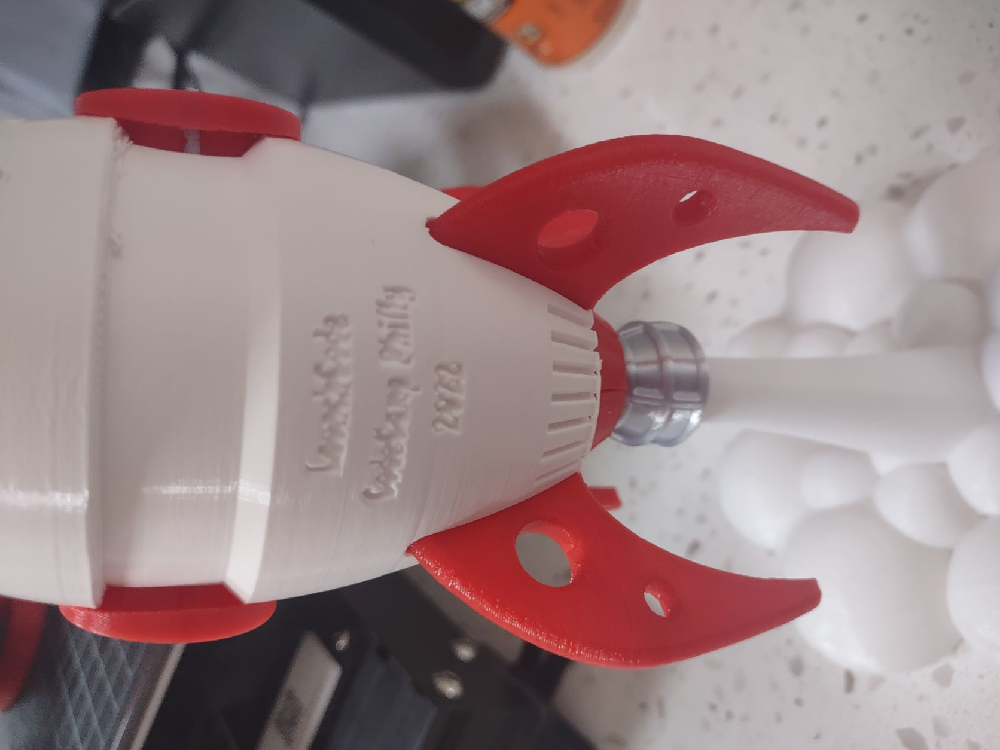
I'd like to thank our Instructor, Banana Cat Gerard, as well as TA Pearce for his very
strict teaching but yet so kind and great patience with all of us. Seriously, without teachers like you, there
would not have been any of us. No words of appreciation can begin to equal the amount of knowledge you have passed
on to all of us. Thank you very much, sincerely, and I am sure I can speak for everyone in the class about how
great TA Colin and TA Braden are as well.